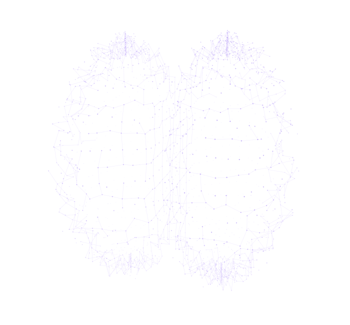

WIRED
DIFFERENT.
Not every mind takes the same path.
That’s where the possibility begins.

MOVE YOUR POINTER TO EXPLORECHOOSE A PERSPECTIVE BELOW
There is no single
right way to think,
learn, or be.
Neurodiversity is the natural variation in human minds. How we pay attention. How we communicate. How we experience the world.
Understanding those differences can change what we make possible for each other.
Start with the languageCHANGE THE SETTING.
OPEN UP POSSIBILITY.
A setting can create a barrier. Explore a few ways to make participation easier. Every person’s preferences still matter.
Switch it on. See what a few thoughtful adjustments could look like.
The same setup can work well for some learners and create barriers for others.
Build a support checklistAN EXAMPLE OF CHANGING AN ENVIRONMENT, NOT A SIMULATION OF A CONDITION OR A FORMAL SUPPORT PLAN.
MAKE ROOM
FOR A NEW
PERSPECTIVE.
Start with the essentials.
Or take a different route in.
Five things to know
The big ideas behind a more inclusive world.
Words worth knowing
A plain-language guide to neurodiversity terminology.
Explore the differences
Understand conditions, experiences, and individual needs.
A more inclusive school
Practical ways to make learning work for more people.
In their own words
Listen to neurodivergent people share their experiences.
Fact, myth, or more to it?
Question assumptions with a six-question knowledge check.
Keep exploring
Reading lists, talks, and stories to take you further.
Sources & references
Follow the research and explore the original references.
No chapters match this filter.
LISTEN
FIRST.
No definition can tell
the whole story.
Hear neurodivergent people share their experiences with identity, learning, work, and everyday life.
Hear their perspectives